OmniVoice: Towards Omnilingual Zero-Shot Text-to-Speech with Diffusion Language Models
零样本文本转语音（Zero-shot TTS）模型已展现出仅凭几秒参考音频即可生成高质量语音的惊人能力，但大多数现有模型仅支持有限的语言集合，数百种低资源语言被遗漏。扩展语言覆盖范围不仅是技术挑战，更是将语音技术延伸至全球各语言的关键一步。
在可扩展且高质量的TTS追求中，当前研究主要遵循两种范式：自回归（AR）模型和非自回归（NAR）模型。NAR模型在推理速度（并行解码）和鲁棒性（双向上下文）方面具有优势。NAR框架内，模型可分为连续隐空间基和离散令牌基两种，后者被证明能产生更优的韵律多样性。
然而，当前SOTA的离散令牌NAR系统（如MaskGCT）通常依赖复杂的两阶段级联流水线（文本到语义，再语义到声学），虽然这种解耦简化了各模块的训练，但也引入了显著缺陷：（1）错误传播——语义预测的不准确会降低最终音频质量；（2）信息瓶颈——低比特率的语义表征牺牲了精细的声学细节。单阶段替代方案虽然尝试绕过这些问题，但在语音可懂度方面一直落后于两阶段系统。
OmniVoice是一种单阶段NAR TTS模型，采用扩散语言模型风格的架构。具体而言，模型以离散扩散目标训练，并采用双向Transformer主干网络，直接将文本映射到多码本（multi-codebook）声学令牌，从而绕过级联流水线的复杂性和局限性。这种端到端的精简架构为大规模多语言建模奠定了基础。
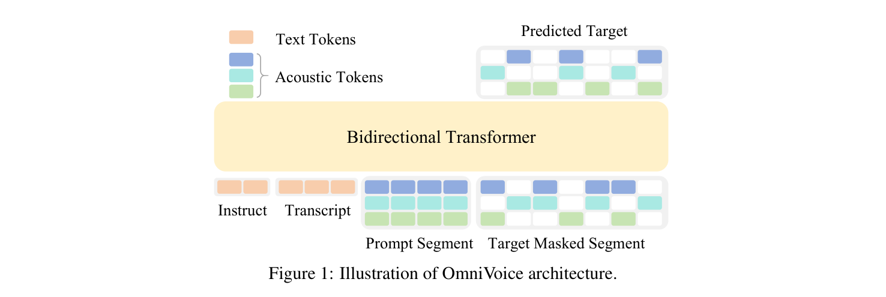
OmniVoice的输入包括：
声学矩阵沿时间维度分为两部分：提示段 $X_{\text{prompt}}$（包含前缀声学上下文）和目标掩码段 $X_{\text{target}}$（令牌随机替换为特殊掩码令牌 [M]）。模型利用文本条件 $Y$、提示 $X_{\text{prompt}}$ 和 $X_{\text{target}}$ 中未被掩码的令牌来恢复掩码位置的原始令牌。
文本令牌通过文本嵌入层嵌入，声学令牌通过码本特定的嵌入层嵌入。同一时间位置上所有 $C$ 个码本的嵌入求和形成统一嵌入，随后送入双向Transformer。输出端使用 $C$ 个独立的码本特定预测头，将最终隐状态投影为其对应码本词汇上的概率分布。
训练损失在掩码声学令牌位置上计算：
$$L = -\sum_{(t,c) \in M} \log P(x_{t,c} | X, Y; \theta)$$其中 $x_{t,c}$ 是时间步 $t$ 和码本索引 $c$ 处的真实声学令牌，$M$ 为掩码位置集合。
掩码设计对OmniVoice至关重要，直接决定训练模式和损失函数。以往多码本声学令牌预测方法通常采用"逐层"掩码策略（per-layer masking），每个样本仅在单个码本层 $c$ 内随机掩码并仅在该层计算损失。这种策略为每次迭代仅优化令牌矩阵的稀疏子集，导致训练效率不佳。
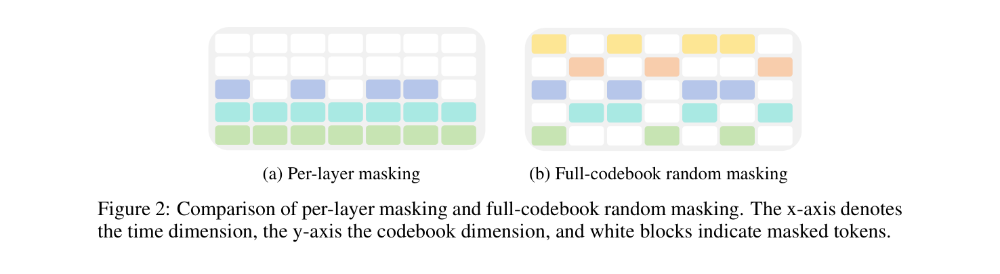
OmniVoice采用全码本随机掩码策略：对 $T \times C$ 令牌矩阵中的每个条目独立采样二值掩码 $m_{i,j} \sim \text{Bernoulli}(p_t)$，其中掩码比率 $p_t$ 从均匀分布 $p_t \sim U(0,1)$ 中采样。因此平均50%的令牌用于损失计算，比逐层掩码多 $C$ 倍，显著加速收敛并提升生成质量。
现有离散NAR TTS模型（尤其是单阶段架构）在可懂度方面往往不如对应的AR模型。OmniVoice提出一种简单有效的策略：使用预训练的自回归大语言模型（LLM）权重初始化模型主干网络。OmniVoice的主干结构与标准AR LLM结构相同，便于直接权重迁移。虽然这些LLM原本以因果掩码训练，但实验表明其预训练知识能很好地迁移到双向架构。这使得OmniVoice成为首个成功利用LLM初始化实现显著可懂度提升的NAR TTS模型。
OmniVoice的核心目标是将语言支持扩展至600+种语言，包括数百种主流TTS系统很少支持的低资源语言。团队聚合了50个数据集（完全来自开源资源），使用语音恢复模型增强退化语音，并使用基于规则的过滤排除无效转录。最终语料库包含581k小时音频，涵盖600+种语言。
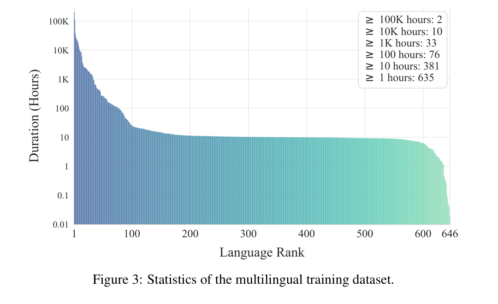
为缓解严重的数据不平衡，OmniVoice采用语言级数据重采样策略。每种语言 $i$ 被分配重复因子：
$$r_i = \max\left(1, \text{round}\left(\left(\frac{D_{\max}}{D_i}\right)^{1-\beta}\right)\right)$$其中 $\beta=0.8$，在保持高资源语言性能的同时确保低资源语言获得充足的模型接触。对于多语言文本处理，OmniVoice使用预训练LLM的子词分词器，消除了繁琐的字母到音素转换和语言特定文本规范化。
在实际场景中，音频提示常受环境噪声或混响干扰。OmniVoice实现提示降噪任务：训练时对一部分数据在提示段注入合成噪声和混响，配以特殊指令令牌 <|denoise|>，迫使模型将说话者内在声音身份与声学环境分离，即使基于退化提示也能合成干净的高保真语音。
在无音频提示的情况下，OmniVoice支持基于说话者属性（性别、年龄、音高、口音/方言）的语音设计，将属性编入训练指令序列即可合成高度定制化的声音。
OmniVoice通过含情感线索的数据集训练实现副语言控制（如笑声）。同时采用混合文本输入格式——训练时随机将字符或词替换为其拼音（中文）或CMU发音词典音素（英文），允许用户在推理时精确控制发音，处理多音字等复杂语言场景。
OmniVoice训练了两种数据配置：（1）双语变体，在Emilia数据集的中英文子集上训练，便于与现有SOTA模型公平比较；（2）多语言变体，在自建的581k小时、600+语言多语言数据集上训练。
模型基于Qwen3-0.6B预训练LLM权重初始化的双向Transformer主干，采用Higgs-audio分词器提取8码本声学令牌。使用AdamW优化器，峰值学习率1e-4，余弦学习率调度（3%预热步数），BF16混合精度和序列打包（每GPU 8192令牌）。8块H800 GPU上，多语言变体（2M更新步）训练9.66天，双语变体（300k更新步）训练1.33天。
推理时执行32步迭代去掩码过程，累积去掩码比例 $r_n$ 采用时间偏移调度：
$$r_n = \frac{\tau \cdot (n/N)}{1 + (\tau - 1) \cdot (n/N)}$$其中 $N=32$ 为总步数，$\tau=0.1$ 为偏移参数。位置选择基于置信度分数采样（温度 $T=5$），令牌分配取argmax确定。同时施加层惩罚鼓励先去掩码低层令牌，并使用CFG（引导尺度2）。目标时长通过基于字符权重（脚本依赖）的比例缩放估计。
说话者相似度用SIM-o（WavLM基ECAPA-TDNN模型）评估；可懂度用WER/CER评估；自然度用UTMOS评估；主观评估用CMOS（比较平均意见分数，范围[-3,3]）和SMOS（相似度平均意见分数，范围[0,5]）。
OmniVoice-Emilia在所有NAR基线（F5-TTS、ZipVoice、MaskGCT）上取得全面领先，验证了架构的有效性。最终多语言版OmniVoice在所有基准上与不限数据训练的AR基线取得竞争力整体表现，在说话者相似度和可懂度方面尤为突出。
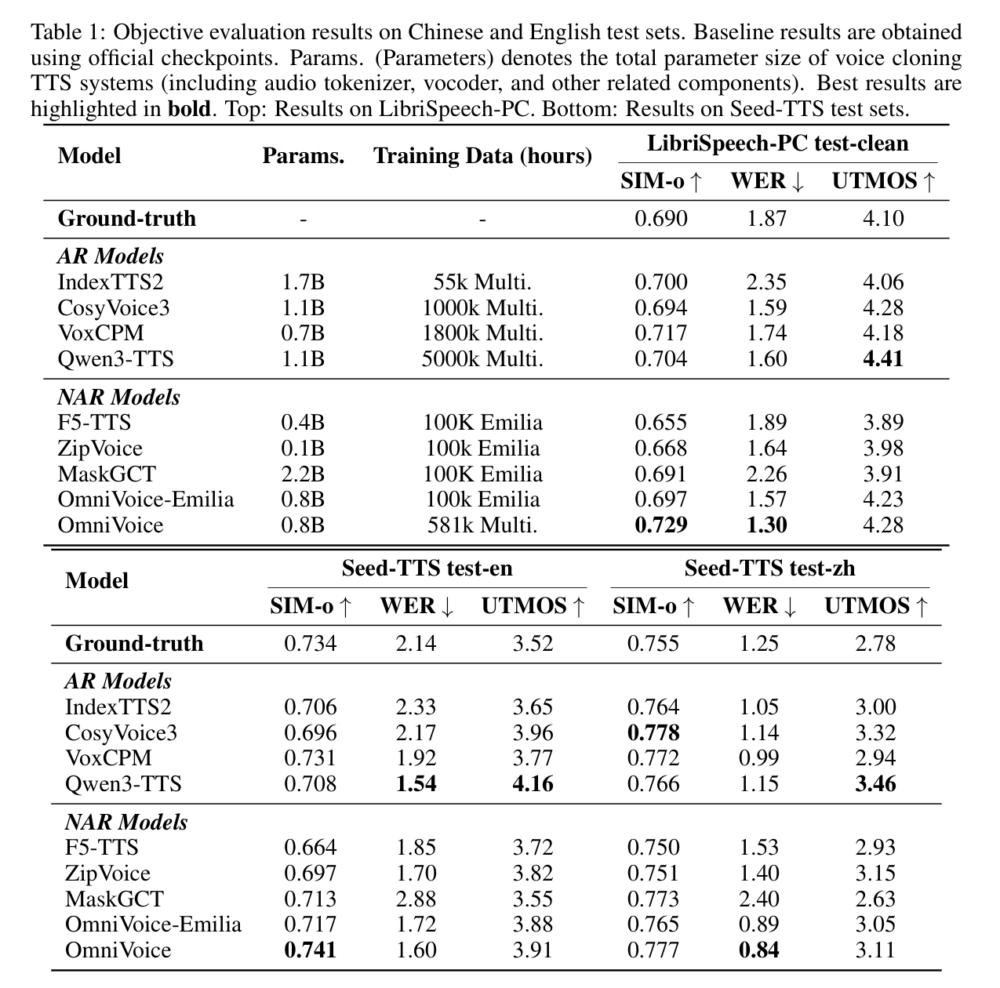
主观评估中，OmniVoice取得CMOS=0.44、SMOS=3.80的最佳主观评分，超越Qwen3-TTS（CMOS=0.40、SMOS=3.65）。
在24语言MiniMax-Multilingual-24基准上，OmniVoice在平均SIM-o（0.830 vs 0.766 vs 0.655）和平均WER（2.850 vs 3.774 vs 10.950）上均显著优于商业系统MiniMax-Speech和ElevenLabs Multilingual v2，展示了商业级多语言TTS性能。
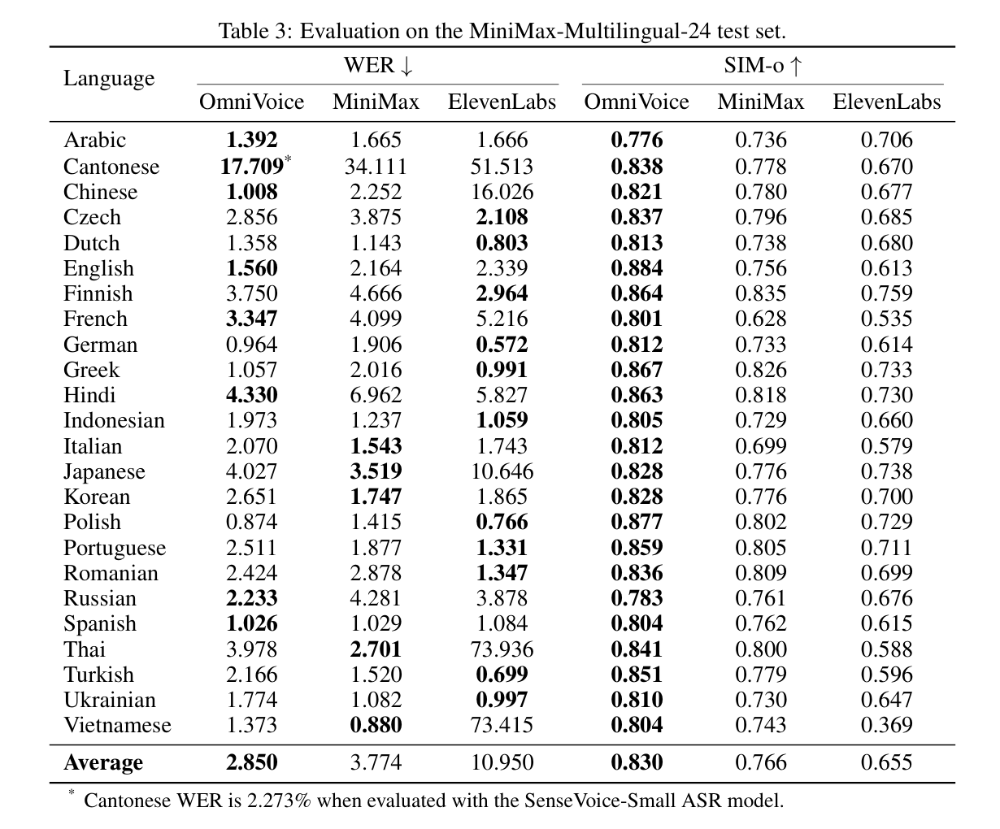
在102语言FLEURS-Multilingual-102基准上，OmniVoice取得平均CER=4.00%（与真实语音的5.11%相当），82种语言CER≤5%，95种语言CER≤10%，超越了真实语音的对应指标。
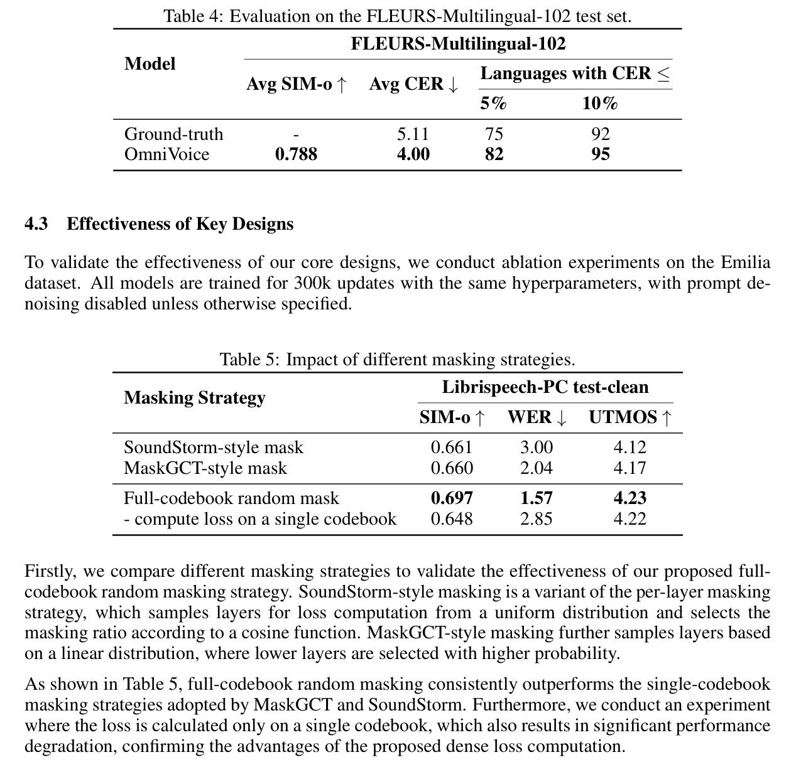
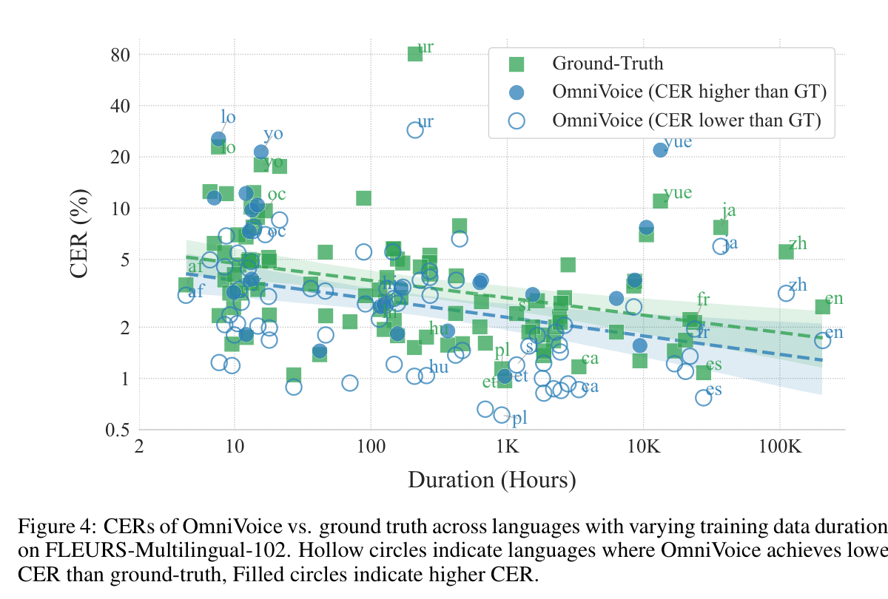
全码本随机掩码在SIM-o、WER、UTMOS三项指标上全面优于SoundStorm式掩码和MaskGCT式掩码。将损失仅计算在单个码本上也导致显著性能退化，确认了密集损失计算的优势。
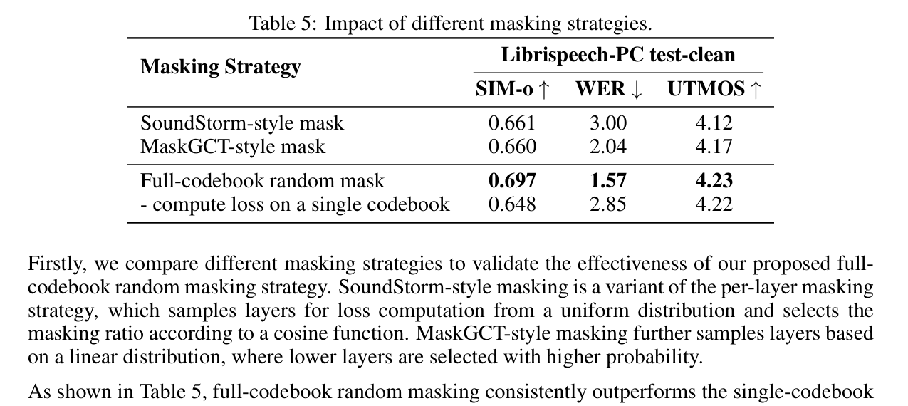
即使经过大量学习率调优，无LLM初始化的模型WER仍始终高于有LLM初始化的模型（1.57 vs 最低2.52），凸显了从预训练LLM继承语言知识的重要性。
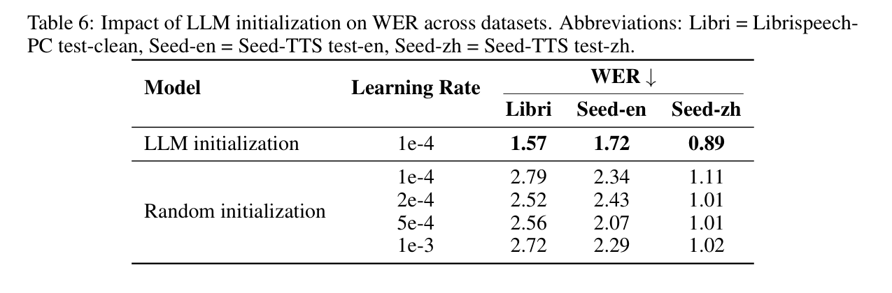
启用提示降噪后，UTMOS从4.23提升至4.32（生成更干净语音），SIM-o略有下降（0.697→0.668），因为生成语音比噪声提示更标准化，符合设计目标。
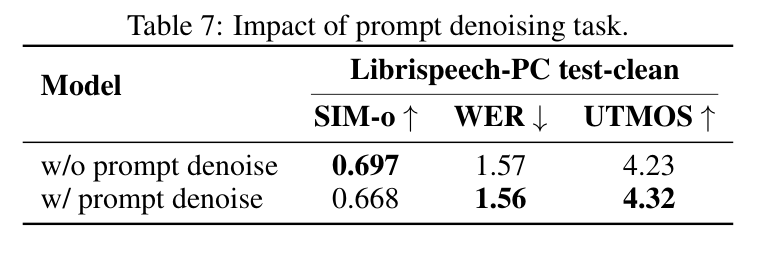
OmniVoice在H20 GPU上以16步推理和batch=1达到RTF=0.0319，优于ZipVoice的0.0557（同等步数）。批量推理时RTF进一步降至0.022，可通过TensorRT等加速技术继续提升。
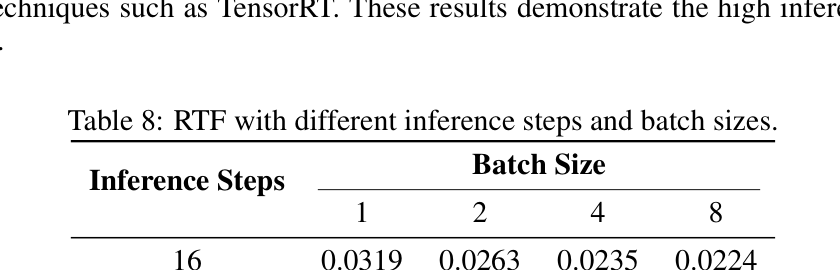
1. 新颖的扩散语言模型式单阶段NAR架构：OmniVoice直接将文本映射到多码本声学令牌，绕过两阶段级联流水线的错误传播和信息瓶颈问题。
2. 全码本随机掩码策略：相比逐层掩码，训练时损失计算密度提升 $C$ 倍，显著加速收敛并提升生成质量。
3. LLM初始化策略：首个成功利用预训练LLM初始化提升NAR TTS可懂度的模型，使单阶段架构的可懂度达到SOTA水平。
4. 迄今最广泛的语言覆盖：基于581k小时开源多语言数据集（600+语言），OmniVoice实现了零样本TTS模型中最广泛的语言覆盖。
5. 多维度可控性：支持提示降噪、说话者属性语音设计、副语言和音素控制，增强实用性。
6. 高推理效率：16步推理即可达到高质量输出，RTF优于同等配置的竞品模型。
OmniVoice目前仅在公开开源数据集上训练。由于这些数据源标注质量不一致、声学质量不均匀，使用更精心整理的高质量数据仍有大幅性能提升空间。模型的指令跟随能力受限于现有指令微调数据的多样性和质量，构建高质量指令数据集将显著增强语音设计和定制能力。
OmniVoice尚未针对复杂数字序列或数学模式进行优化，集成外部文本规范化前端可有效增强此类场景性能。此外，不同于连续空间NAR TTS模型可通过流蒸馏等技术大幅减少推理步数，离散空间NAR TTS模型目前缺乏可比的推理加速方法，探索该分支模型的推理优化策略是重要未来方向。
OmniVoice在多个层面实现了重要突破。架构层面，单阶段NAR设计直接映射文本到声学令牌，消除了两阶段流水线的固有缺陷，这是对离散令牌TTS范式的一次重要简化。训练层面，全码本随机掩码策略和LLM初始化这两个看似简单的设计选择，却在训练效率和可懂度上产生了显著提升，验证了"正确的初始化胜过复杂的架构"这一原则。
数据层面，581k小时、600+语言的覆盖范围是零样本TTS领域的里程碑。特别值得注意的是，OmniVoice在许多训练数据不足10小时的低资源语言上仍能保持CER<5%的可懂度，这展示了精简架构配合LLM知识继承的强大泛化能力。在102语言基准上，OmniVoice的CER甚至低于真实语音的ASR测量值，说明其性能已超越了现有ASR评估工具的测量极限。
然而，OmniVoice的局限性也值得关注：推理仍需32步迭代去掩码（虽可降至16步但质量略有下降），离散令牌空间缺乏流蒸馏等加速手段；多语言数据质量的不一致性限制了进一步提升空间。未来若能结合高质量私有数据、更精细的指令微调以及推理加速技术，OmniVoice有望成为真正实用的全语种语音合成基础设施。